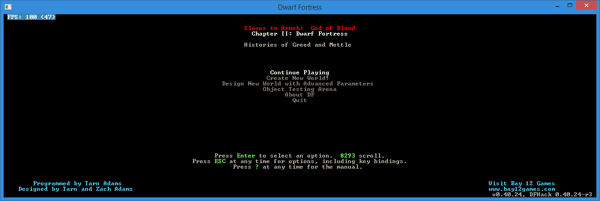
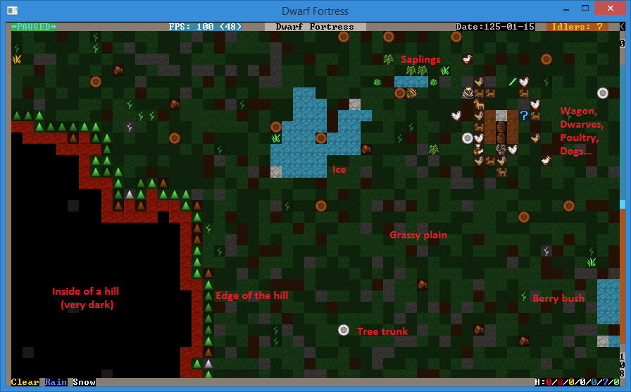
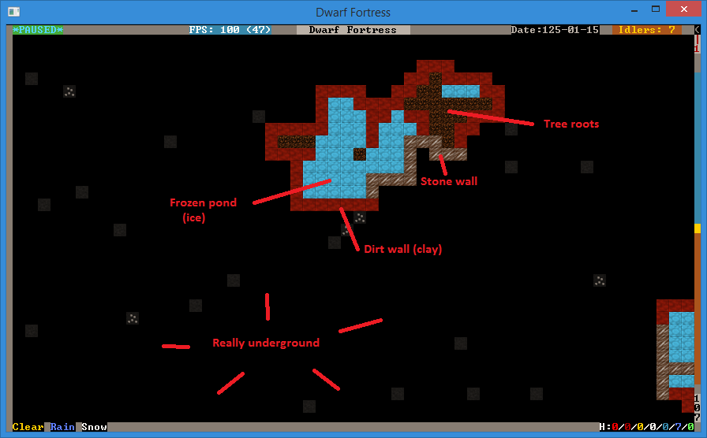
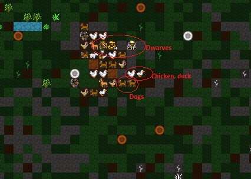
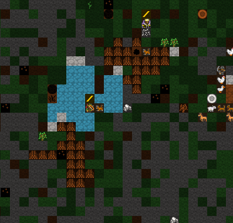

1. Getting Started¶
Dwarf Fortress is an extremely interesting and complex game, but one which people find exceptionally difficult to get into. Although it isn’t hard to find tutorials, many assume some basic knowledge of the interface and what the player is looking at. They also don’t take into account different tilesets and versions and the difficulty new users have in finding a good site for that first fortress.
But all that is in the past Dwarf Fortress Walkthrough! It comes with a pre-made world and save and full game download for you to play along with. And a ton of screenshots. Yes, many, many screenshots.
So grab a drink, get your thinking cap on and be prepared for some dwarfy fun! And carp. Never forget the carp…
1.1. Set Up¶
Download the walkthrough pack here.
This tutorial uses a pre-configured install of DF, with the same save and all the extras you need - but no more. If that’s not going to work for you, see the guide to Setting up your install.
After downloading the pack, you need to unzip the folder onto your hard
drive (but not in Program Files). Then create a shortcut on your
desktop leading to the launcher or directly to Dwarf Fortress.exe.
1.2. Run the Game¶
Now we’re ready to get going! Click on your new shortcut, hit “Play” if you’re using the launcher, and you should get the screen below.
So, you’ve got the game running and enjoyed the exciting ASCII intro
movie. Well done! I can tell you’ll go far! Next step is to hit
Enter on Continue Playing, which should be
highlighted. You’ll then be presented with this screen.
This is the save game list, which gets cluttered very quickly as
seasonal saves build up. But for now all you have to do is use the
down-arrow key (not the number pad arrow key) to select
region1-post-embark. Hit Enter and the game will load.
1.3. First Look¶
Once the game loads you will be presented with this screen. Although
it’s confusing on first glance, don’t panic! It will all be made clear
shortly. First thing though, hit Space to pause the game.
Esc backs out of any menu you’re currently in.
Lets talk about what you can see. First up, the screen is divided into
three sections: The left shows the local view. The center shows the
action menu, the right shows the area map. To make things a lot neater
hit Tab, which cycles through various menu arrangements. Stop
when your view matches the one below.
Now we’re really cooking with gas! Soon you’ll be melting foes with magma-falls, and drowning goblins in artfully engineered traps! But before then, lets look around. Use the arrow keys to navigate around the local area. You’ll notice the we’ve got a decent amount of space to work with.
While you examine your surroundings you should be able to spot tree trunks and the grassy areas easy enough, same with (frozen) ponds and the stream and bushes. Other tiles won’t make much sense, these tend to be the slightly-arcane zones like open air spaces (pale blue tiles, or tiles with dots) and the earth (brown tiles) and slope or ramp tiles (upward triangles). The screenshot below should help point those features out.
Key to understanding DF’s local view is getting your head around the fact that DF is a 3D game displayed on a 2D map. To display a variety of heights the world is sliced into dozens of Z-levels. Each Z-level is numbered.
If you look on the bottom right of the window you’ll see we’re
currently at level 108. To move between levels you need to hit <
to go up, and > to go down. If you go up a level the map will
look like image below. Try it yourself now.
You’ll see that what was black dirt is now grass and trees. It’s like we’ve gone up a floor in a lift and we’re no longer looking at a slope, now we’re looking across a grassy plain. Below us is open space and tree tops. Make sense? Now, try going back down to 108 and then down to 107, a level below “ground” level.
Your view should look something like this. We’re underground now with mostly dirt around and earth between the pool, the tree roots, and the rest of the ground. You may have noticed the pool doesn’t appear to have changed much, but don’t be confused. The difference is that on this lower level we’re on the same level as the body of the pool itself, at the level above, we’re actually above the pool a little looking at the top of it.
Continue having a look around. When you’re done, return to Z-level 108 and find the wagon with our dwarves. The helpful graphic below explains what you’re looking at.
1.4. Lets get digging!¶
So now what do we do? In Dwarf Fortress we’re usually trying to get a bustling community of dozens of dwarves up and running, while fending off goblins, the whims of nobles and assorted other evils. To do this we need to build ourselves a mighty fortress! Preferably underground. So lets find a cliff face to dig into and get this show on the road!
If you go west (left) from where our dwarves are (using the arrow keys) you’ll see a nice cliff face. Lets dig an entrance into this spot and plan to eventually dig down way underground where it’s safe and cosy. First up, get the map centered around about where we want to dig (shown on the screenshot below). Once you’re ready:
- Hit the
dkey. You’ll see the menu on the right changes and in the local view a yellow X has appeared. The menu on the right should show the Mine option highlighted. If it doesn’t, hitdagain, to select it. - Move the cursor to the edge of the cliff, like this:
- Now hit enter and move your cursor down with the arrow keys. You’ll
see that you’ve dropped a flashing “anchor”. This is going to mark out
what your dwarves will dig. Move it across 20 and up 3 and hit
enter, your screen should look like this:
The browned out area shows where your miners are going to come along
and dig. But they won’t act until you back out of the
Designations menu as the game is paused. Hit Esc and
you should see the game unpause and the menu reset to its master list.
Oh, when you have the d menu up you can actually click on the
map with your mouse and select areas to mine. Some people prefer to
select areas this way.
With the game unpaused you should notice two dwarves race to the cliff face and start digging. With our entrance under way we should also think about laying out some rooms for our dwarves to live in, who wants to spend time out under that hot yellow disk when lovely rock and earth beckon!
Right now we’re not worried about making our fortress perfect and creating the strongest entrance, we’re simply trying to scratch out a space to live! To that end we’ll need three or four rooms off this main entrance.
See if you can match the layout below by marking out areas to dig, as
you’ve learnt. If you make a mistake you can hit x from the
Designations (d) menu and you’ll note that the menu
on the right has Remove Designation highlighted. Now when
you hit enter and select an area, any area set for digging will be
cleared of that designation. Anyway, enough detail, on with the room
building!
Look at the little dwarves go! Aren’t they industrious! They’re quickly digging away and leaving a lot of dirt floor behind them. Good lads! Lets leave them to their work while we sort out some other important jobs.
1.5. Chopping trees, setting up piles¶
Dirt and rocks are handy, but so is wood to make nice dwarven beds, and we’re short on it right now. To get wood, we need to chop down some trees. And we do that by designating an area of trees to be chopped. Lets get cracking and clear the trees in front of the entrance.
Designating trees to chop is like designating rocks to be dug, so lets decimate the local environment!
- Move the map around so you’re looking out front of your fortress.
- Hit
d. Hopefully this time you’ll notice the game has automatically got Chop Down Trees selected, if it doesn’t, hittand it will be highlighted. - Move the cursor to the upper left, hit Enter, and move the cursor to the bottom right, hit Enter again. Any trees in that area will now be set to be cut, as indicated by them all being marked brown.
Although you’ve done well neither man nor dwarf can live on wood and dirt alone! Luckily for us there are plenty of bushes out there loaded with ripe berries. Lets set some of them to be picked:
- Hit
dagain and thenp. One the right Gather Plants is now selected. - Designate about the same area as we did with the wood cutting.
- All the bushes will be highlighted now, and when you unpause you should see a plant harvesting dwarf join the woodcutter.
Your view now should look something like this, note the brown ‘highlights’ and fallen logs:
Now lets sit back and watch the dwarves work for a minute! It won’t take long before our miners have cleared out our temporary living quarters and our woodcutter and plant gatherer have begun their work. Once the interior space is clear we have lots of work to do, so lets break it down into useful chunks.
1.6. Our First Farm¶
Farming is how you will make most of your food in Dwarf Fortress, and it’s important to get farming quite quickly. If food runs out your dwarves will starve and your game will end prematurely, and we don’t want that, right? dwarves usually farm underground and handily, we have a space all prepared. So follow along, and lets get some tasty mushrooms growing for our stumpys to chow down on!
- Find the bottom right room.
- Hit
bfor the Building menu and thenpfor Farm Plot. - Move the cursor to your farm area.
- The screen instructions tell you how you can increase the size, we
need a good 6 by 6 plot, so hit
uandka few times until you’ve got a big green grid, like the one below. - Move the grid around with the arrow keys until it’s in about the same
position as the one in the screenshot. If you get the size wrong,
handmwill reduce the plot.
- Hit
Enterand the green area marker will change to a flashing brown field marker. When stuff flashes it indicates that dwarves are on their way to come build the construction, in this case, a field. And lookee-here! A farmer has come to build our field for us!
He will take a short while to build your field. When you see the dwarf run off, you know he’s done. Now it’s time to set the field to grow delicious plump helmets all year round.
- Hit the
qkey. This is the key for Set Building Tasks and Preferences. Again you’ll notice a cursor on the local screen and if it’s anywhere near the field, the field will be flashing. You can move that cursor around with your arrow keys, this is useful later on when you need to select different workshops and buildings. - You’ll note that on the right the menu now shows you specific task details associated with that field, like so:
- What we want to do is set Plump helmets as the food to be planted every season. You can see on the top right of the menu we have the various plants we could try and grow and in the middle area we have the different seasons. Right now Dimple cups are selected (but not highlighted, note) and the season is set on Spring, as it’s Spring currently. We need to change these settings.
- Now comes an important skill! Menu scrolling! Using
=(not the down-arrow), scroll down through the list to Plump helmets and hit enter. You should now see Plump helmets highlighted. By the way,-/=is the way to scroll in menus; DF usually uses - and +, but having to use the shift key gets annoying. - Good work! But right now we’ve only set the spring planting. It’s
time to set the planting for Summer, Winter and Autumn too. To do this,
with the field task menu up, hit
bfor Summer and then scroll to Plump helmets and hit enter again. Hitcfor Autumn, set Plump helmets and thendfor Winter, repeating your selection. You may have noticed that what you can plant changes with the seasons, but don’t worry about that for now. - Hit
Escto back out of the menu and resume the game. Your dwarves will quickly begin planting in your new field, well done!
Now we’ve got a field down hopefully none of your dwarves will starve, go crazy and resort to eating rats, or each other. Pretty soon you’ll have a few seeds in the ground and your farm will begin to look a bit like this:

Oh, by now you may have noticed the announcements along the bottom of
the screen. This is generally because the game wants to let you know
that something important has happened. You can hit space to let the
game resume, or hit a to see the alert if you miss it at the
bottom of the screen). Hitting Esc will take you back out of the
alerts menu and resume the game.
1.7. Stockpiles¶
While you can just leave all of your dwarves’ stuff strewn around the countryside, it’s much more efficient to have it all inside near where it’s needed. You may have noticed your farmer dwarves running in and out of the fortress to grab the seeds that they need (when they flash between their icon and a little red dot (the seed icon) you know they are carrying seeds).
This is where stockpiles come in. They make everything more organised. A stockpile for all our food and seeds right next door to the farm would probably be pretty handy, right? We don’t want the dwarves running across the map to get a bite to eat or a seed to plant, so lets make a food stockpile inside!
- Find the room opposite the farm.
- Hit the
pkey (for “piles” of course), a cursor will appear. - Hit
fto select Food, we want to make a food stockpile, after all. - Move the cursor to the bottom right of the room, hit enter, move it to the top center and hit enter again. You have now set that space as a food stockpile, well done!
- Hit
wto make a Wood stockpile, and place it on the other side of the room. - After a few seconds your spare dwarves will start moving food inside, you’ll see barrels and bags being hauled and pretty soon the stockpile will look something like this:
You don’t have much room inside the fortress yet, so no more piles for now. In time you’re going to want to put stockpiles everywhere to help manage your production and resource gathering. For now, well done, you’ve got food production up and running, you’ve set up a stockpile, you’ve set wood to be chopped and plants to be gathered and you know how to do some basic digging! You’ve come far!
Before reading Chapter 2, how about setting some more plants to be gathered and more wood to be chopped. Then, head to the next instalment and we’ll learn all about workshops, bedrooms, dinning rooms and stairs! It will be ever so exciting, I promise!